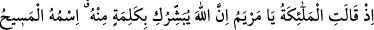
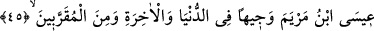
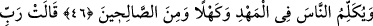
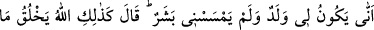
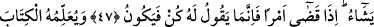
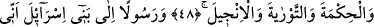
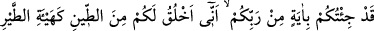
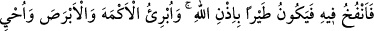
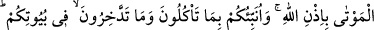
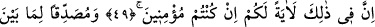
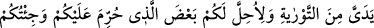
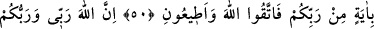
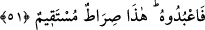
HZ. İSA’NIN DÜNYAYA GELMESİ
45. Melekler demişlerdi ki: Ey Meryem! Allah sana kendisinden bir kelime’yi
müjdeliyor. Adı Meryem oğlu Îsâ’dır. Mesih’dir; dünyada da, âhirette de itibarlı ve
Allah’ın kendisine yakın kıldıklarındandır.
46. O, sâlihlerden olarak beşikte iken ve yetişkinlik hâlinde insanlara (peygamber
sözleri ile) konuşacak.
47. Meryem: Rabbim! dedi, bana bir erkek eli değmediği halde nasıl çocuğum
olur? Allah şöyle buyurdu: İşte böyledir, Allah dilediğini yaratır. Bir işe hükmedince
ona sadece “Ol!” der, o da oluverir.
48. (Melekler, Meryem’e hitaben Îsâ hakkında sözlerine devam ettiler:) Allah ona
yazmayı, hikmeti, Tevrât’ı ve İncil’i öğretecek.
49. O, İsrâiloğulları’na bir elçi olacak (ve onlara şöyle diyecek:) Size Rabbinizden
bir mûcize getirdim: Size çamurdan bir kuş sûreti yapar, ona üflerim ve Allah’ın
izni ile o kuş oluverir. Yine Allah’ın izni ile körü ve alacalıyı iyileştirir, ölüleri
diriltirim. Ayrıca evlerinizde ne yeyip ne biriktirdiğinizi size haber veririm. Eğer
inanan kimseler iseniz, bunda sizin için bir ibret vardır.
50. Benden önce gelen Tevrât’ı doğrulayıcı olarak ve size haram kılınan bazı